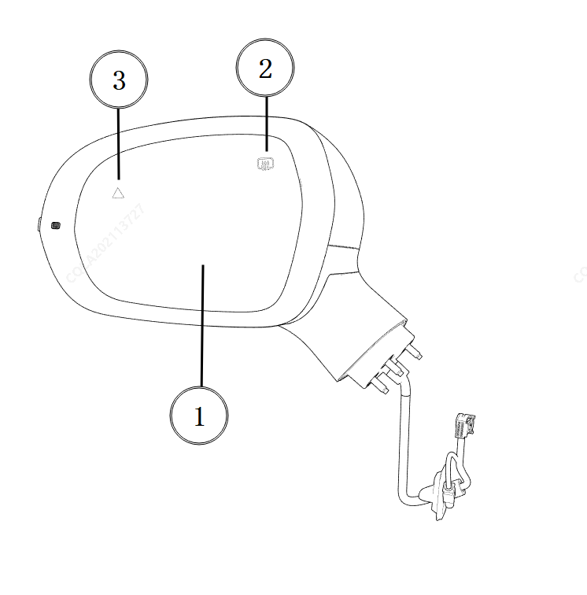
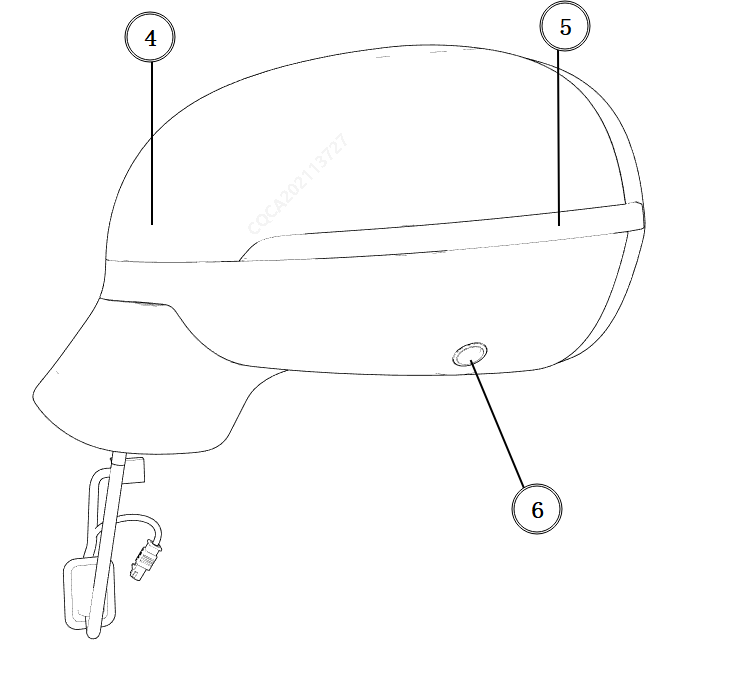

Полный функционал наружных зеркал заднего вида включает в себя: электрорегулировку зеркального элемента (1), электрообогрев зеркального элемента (2), предупреждающий индикатор помощи при смене полосы движения (3), электроскладывание (4), боковой указатель поворота (5), панорамную камеру (6).
Из вышеперечисленных функций только электрорегулировка зеркального элемента (1) устанавливается на все комплектации автомобилей. Электрообогрев зеркального элемента (2), предупреждающий индикатор помощи при смене полосы движения (3), электроскладывание (4), боковой указатель поворота (5) и панорамная камера (6) не входят в базовую комплектацию всех версий и устанавливаются только на определенные комплектации автомобилей.